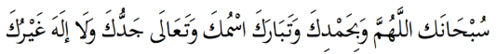
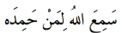
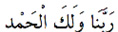
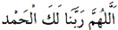

1. Sübhaneke

Okunuşu: Sübhâneke’llahümme ve bi-hamdike ve tebarake-smüke ve taâla-ceddüke ve lâilahe ğayruk.
Anlamı: “Allahım! Seni tespih eder ve sana hamd ederim. Senin ismin mübarektir ve şanın yücedir. Senden başka ilah yoktur”.
(Tespih ve hamd kavramlarının anlamı Fatiha’da verildi).
Sonra euzü besmele çekilir ve Fatiha ve ardından bir sure okunur.
Namazdaki her bir durumdan diğerine geçilirken Allahü ek-ber denir. sadece ruküdan kalkılırken:
 (semia’llahü limen-hamideh) denir.
Anlamı: Allah kendisine hamd edeni bilir. Bunun arkasından:
 ya da  (Rabbena ve leke’l-hamd ya da Allahümme Rabbena leke’l-hamd) demek güzel olur ve önceki söze de uygun düşer. “Allahım, sen bizim rabbimizsin ve hamd sanadır, ya da Ey bizim Rabbimiz olan Allah, hamd sanadır” demektir.